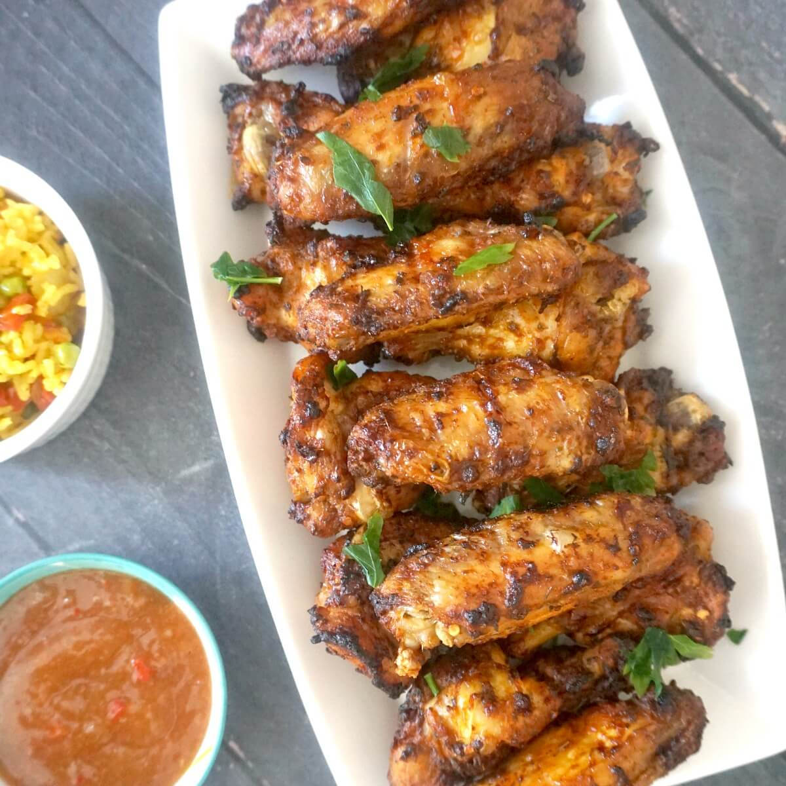

Air Fried Nandos Wings

Ingredients
- 14 Wings (Typically 28 in a pack)
- 3-4 Tablespoons of the Nandoes Sauce Of Choice
- 2 Tablespoons of Flour
- 3 Teaspoons of Piri-Piri seasoning
Steps
- Cover the wings in the Piri-Piri seasoning, toss around to ensure good coating coverage.
- Cover wings with flour, toss to ensure even coating.
- Air Fryer at 200 Degrees. Cook wings for 18 minutes total, turning over after 10 mins of cooking.
- Place wings in bowl and coat with the Nandoes sauce. Throw around to ensure even coating.
- Enjoy